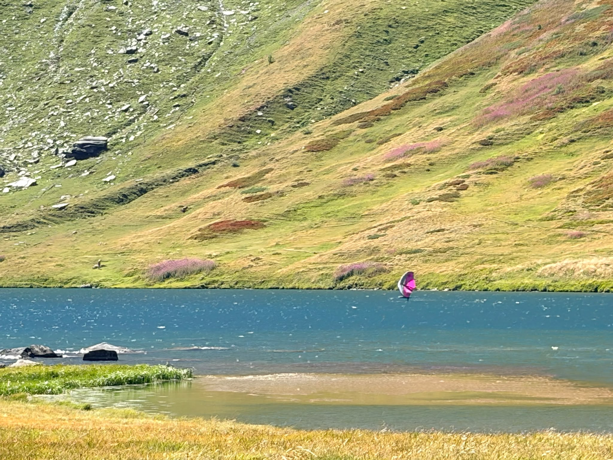

Put the data in order
I build a clean, reliable, well-structured database. One source of truth for the whole operation.
- Postgres
- Airtable
- Google Apps Script
Data systems · Trieste, Italy
I build databases, dashboards, internal apps and automation for short-term rentals, travel and real-world businesses.

Portrait by Carlo Borlenghi — Trieste, October 2023
What I do
I build a clean, reliable, well-structured database. One source of truth for the whole operation.
Dashboards and internal apps that turn operational data into everyday decisions.
Web, Apps Script and agentic AI workflows that keep information moving.
Projects
Vacation rental, real estate and tour operations. Select a project for the full story.
Current projects
Experience · 2016—2025
Data, operations and commercial work: the roles that led here.
Special projects
From running a lakefront villa to websites, bookings and a hotel on the blockchain.
 Owner & host · Lake OrtaVilla VolpeHighest-rated luxury villa on Lake Orta. From daily operations to the data behind it, all in-house. ↗
Owner & host · Lake OrtaVilla VolpeHighest-rated luxury villa on Lake Orta. From daily operations to the data behind it, all in-house. ↗
 Web & bookingsIl MetroneWebsite and booking calendar ↗
Web & bookingsIl MetroneWebsite and booking calendar ↗
 Private consultingDame MaltaWeb, distribution and data ↗
Private consultingDame MaltaWeb, distribution and data ↗
 Partner & early investorTrips CommunityFirst Booking Hotel NFT in history ↗
Partner & early investorTrips CommunityFirst Booking Hotel NFT in history ↗
Dev
Small apps and scripts born from a real need. Ship a first version, keep improving it.
Short lets, mid-term, open 4+4 or controlled 3+2 — which nets more on your flat? Occupancy, flat tax and IMU included. Try two cities right here:
Not «instalment vs rent»: how much net worth you hold after N years, with the renter investing the difference. One example, 20 years at 5%:
When are the markets that can actually reach your place on holiday? Real driving times, 1,318 public holidays, a demand score per week. Hover the weeks:
Electricity, gas, water and Wi-Fi: what does a flat really burn per year? Start from the occupants, then correct every line with your own bills. Drag the slider:
€600 standing + €450 per occupant, split on a typical profile — every quantity and tariff is editable in the tool.
One local question, answered at a glance: where is the wind working now? Stations, gusts, forecasts, sea and webcams for the Gulf of Trieste.
Personal tool · PWA
Igor Sibaldi's method as a guided notebook: 150 rough wishes, the final 101, daily reading. It checks the rules while you write and works offline.
Try the app Scripts → KPIs → Actions
Scripts → KPIs → Actions
Operational scripts · Dashboards
The dashboard is only the last layer. The real work is in the scripts behind it: clean the inputs, derive statuses, calculate KPIs — no manual reporting.
Off the clock
Sport is the backbone. A visual log of the things that keep me sane.



Contact
Have messy data or an operation that no longer scales?
Data & Database Enrichment
I'm back with the company where I cut my teeth in property management — this time on the data side, leading the database layer behind a real estate agency.
Digital & Data Consultant · Freelance, full remote
Two leading European vacation rental companies — Lucca Apartments & Villas (300+ units, 20M€+ gross revenue) and Wengen Apartments (80 units, 5M€+ gross revenue) — a combined 380+ managed units. I support both teams on data, tech and automation.
Technical Director
A tour operator running climb-and-sail expeditions across the Mediterranean — combining mountaineering and sailing into one trip. As technical director I run the tech, the data and the operation behind every season.
Consultant & Tech Specialist
AJL Atelier is a consulting firm focused on the vacation rental and short-term rental industry. I joined as a consultant and tech specialist, working with property managers and operators across multiple markets.
Business Developer
Seably is a B2B SaaS platform for maritime e-learning, serving shipping companies and seafarers worldwide. I wore several hats — business development, data and sponsorship.
Logistic Manager
An itinerant sailing event circumnavigating Italy, with a travelling village that sets up and tears down at each stopover. I ran the logistics of moving that village around the country.
Sports Director
Held every October in the Gulf of Trieste, Barcolana is the largest sailing regatta in the world. As Sports Director I owned the sporting side of an event with thousands of boats on a single start line.
Revenue & Channels Manager
At the time, Trieste Villas was a property management company. I led revenue and channel management and coordinated day-to-day rental operations across the portfolio.
Partner Manager · Company since sold
Bluewago was a sailing tour operator, since sold. As Partner Manager I built and managed both the supply side — skippers and itineraries — and the demand side — bookings and leads.
Alberto Broggi · Skipper — offshore license (beyond 12 nm, 2013)
I grew up sailing a 6.9 m ketch on Lake Orta with my grandfather, then spent five seasons as a windsurf instructor in Porto Pollo, Sardinia. Since 2013 I've worked as skipper and crew across the Mediterranean and the Atlantic — from flotilla holidays to maxi-yacht racing.
Direct link: bebroggi.it/#cv-velico